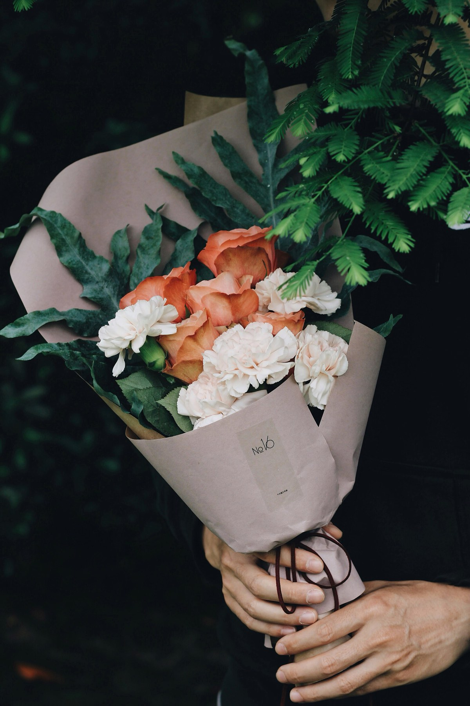
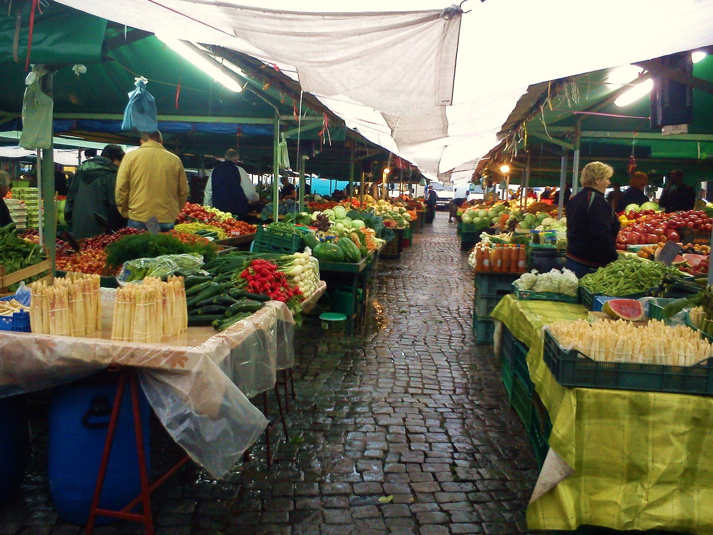
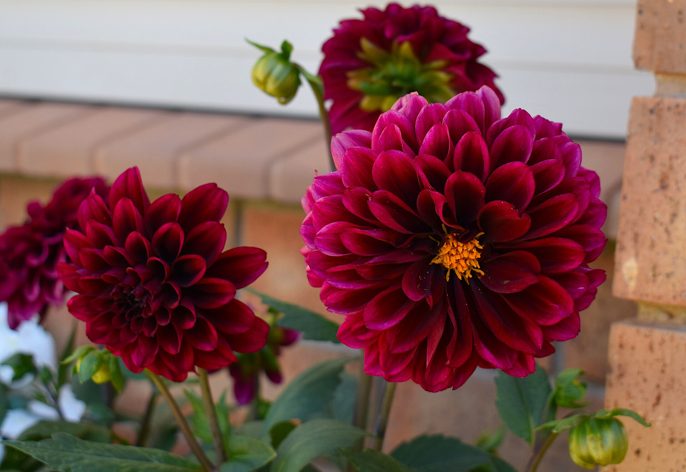
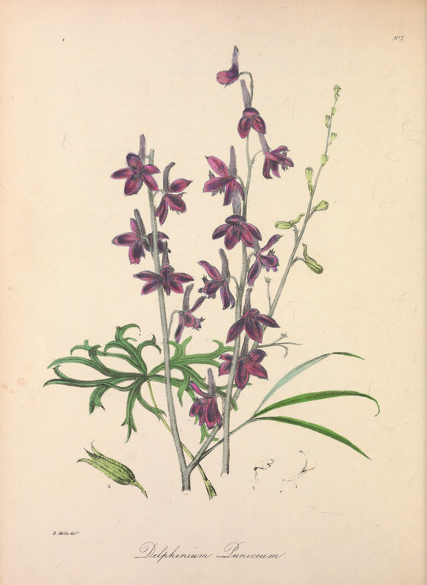
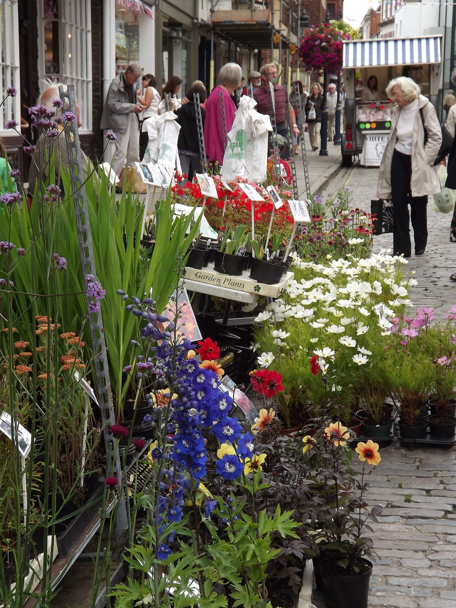
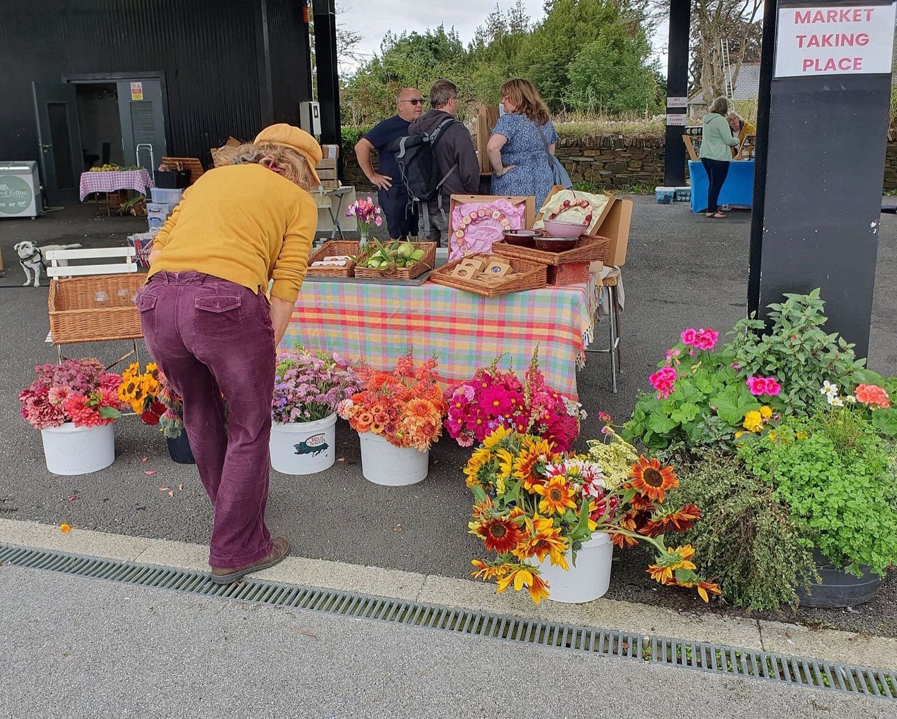
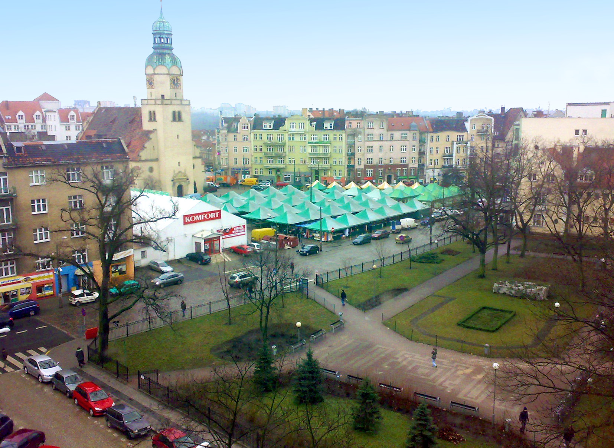
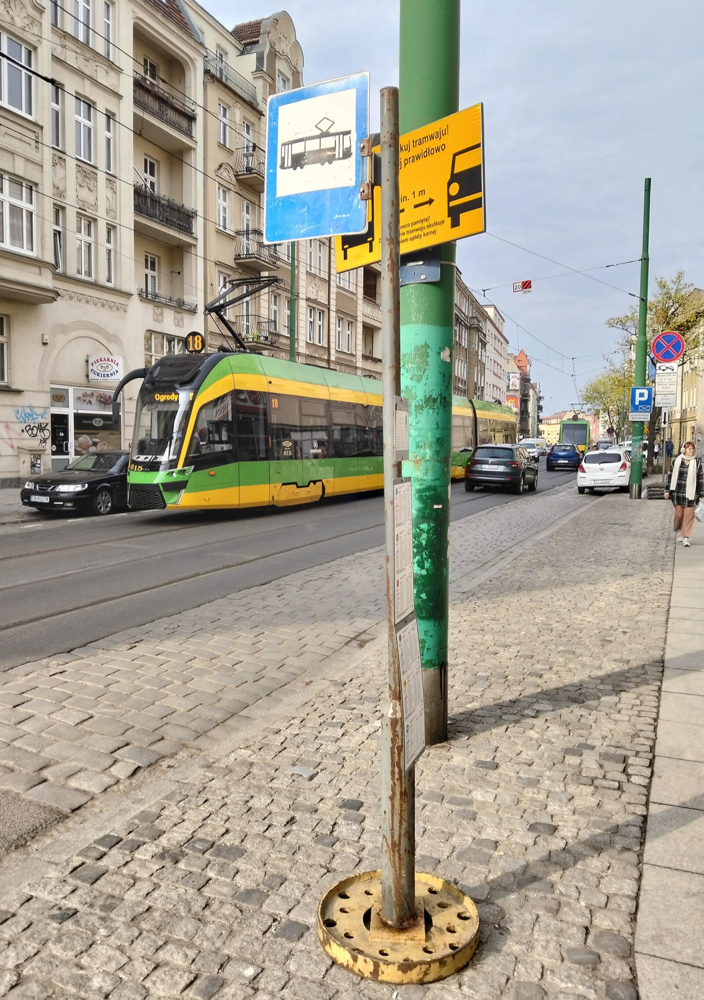

Śluby
Bukiet panny młodej, butonierki i kwiaty na stoły. Spotykamy się przy straganie, przynieś zdjęcie sukienki albo sali.
od 180 zł
Ten tydzień na straganie: dalie z ogrodu pod Mosiną, ostatnie ostróżki, astry i suszony miesiącznik.
Każdy bukiet wychodzi z bilecikiem. Oto sześć, które wiązałyśmy najczęściej.
Na imieniny- - - - - - - - - - - -3 dalie bordo
5 astrów
eukaliptus
szary papier, sznurek85 zł
Na przeprosiny- - - - - - - - - - - -7 ostróżek
gipsówka
dużo zieleni
bilecik bez podpisu
(wiemy, wiemy)95 zł
Do szpitala- - - - - - - - - - - -bez zapachu
bez pyłku
mały, do kubka60 zł
Ślub w urzędzie- - - - - - - - - - - -białe dalie
miesiącznik
wstążka lniana
butonierka gratis
zamów dzień wcześniej180 zł
Na niedzielny stół- - - - - - - - - - - -krótkie łodygi
astry, słonecznik
do niskiego wazonu70 zł
Dla siebie- - - - - - - - - - - -co zostało
po sobocie,
wiązane z tego,
co ładne40 zł
Ceny za łodygę. Lista zmienia się co dwa dni, razem z dostawą z giełdy.

Dalia bordoz ogrodu pod Mosiną12 zł
Asterliliowy, do końca października6 zł
Słonecznikkrótkie i długie łodygi10 zł
Goździkróżowy i biały5 zł

Ostróżkaostatnie w tym roku9 zł
Dodawaj łodygi, a zobaczysz bukiet w szarym papierze i jego cenę. Wpisz, co mamy napisać na bileciku. Zwiążemy go do odbioru albo dowieziemy na Wildę.
Przez trzy tygodnie mamy je z polskich ogrodów, potem znikają do następnego roku. Napisz, a damy znać, gdy przyjdzie pierwsza dostawa.
Daj mi znać o piwoniachZamów dzień albo dwa wcześniej, resztą zajmiemy się same.

Bukiet panny młodej, butonierki i kwiaty na stoły. Spotykamy się przy straganie, przynieś zdjęcie sukienki albo sali.
od 180 złŚwieże kwiaty co poniedziałek, w Twoich wazonach. Stare zabieramy na kompost.
od 120 zł tygodniowoSpokojnie, bez pośpiechu i bez zbędnych wstążek. Dowozimy na cmentarze w Poznaniu.
od 140 zł
Nie trzymamy kwiatów w chłodni tygodniami. Kupujemy co dwa dni, małymi partiami, i to widać w wiadrach.
Kwiaty nie starsze niż dwa dni3× w tygodniu

Stragan na Rynku Wildeckim prowadziła moja mama od 1994 roku. Ja przejęłam go w 2015 i dobudowałam do niego mały sklep z drzwiami, żeby kwiaty nie marzły w styczniu.
Nie sprzedajemy bukietów w celofanie. Każdy owijamy w szary papier i wiążemy sznurkiem, bo tak było zawsze i bo papier można potem wyrzucić do makulatury.
Jeśli nie wiesz, co wybrać, powiedz po prostu, dla kogo. Resztę zrobimy same i dopiszemy bilecik.
Do zobaczenia przy wiadrach.
Ewa Nowicka
Ostróżka, druga generacja na Wildzie
Oddzwonimy przed 19:00 i ustalimy kolory. Płacisz przy odbiorze albo przy drzwiach.


GdziePawilon przy wejściu od ulicy Wierzbięcice, obok stoiska z miodem.
GodzinyPn–sob 7:00–19:00, niedziela 7:00–14:00
Telefon61 000 00 00
DojazdTramwaj do przystanku Rynek Wildecki, linie przez Górną Wildę.